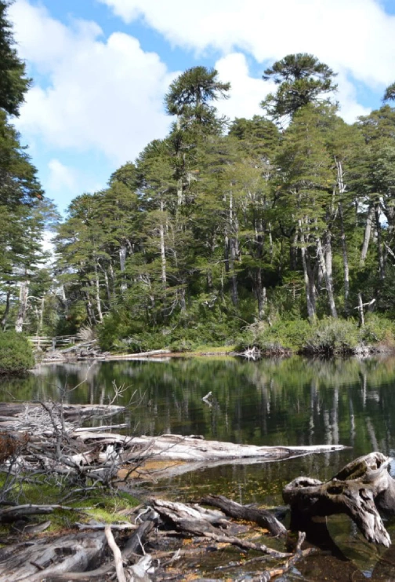
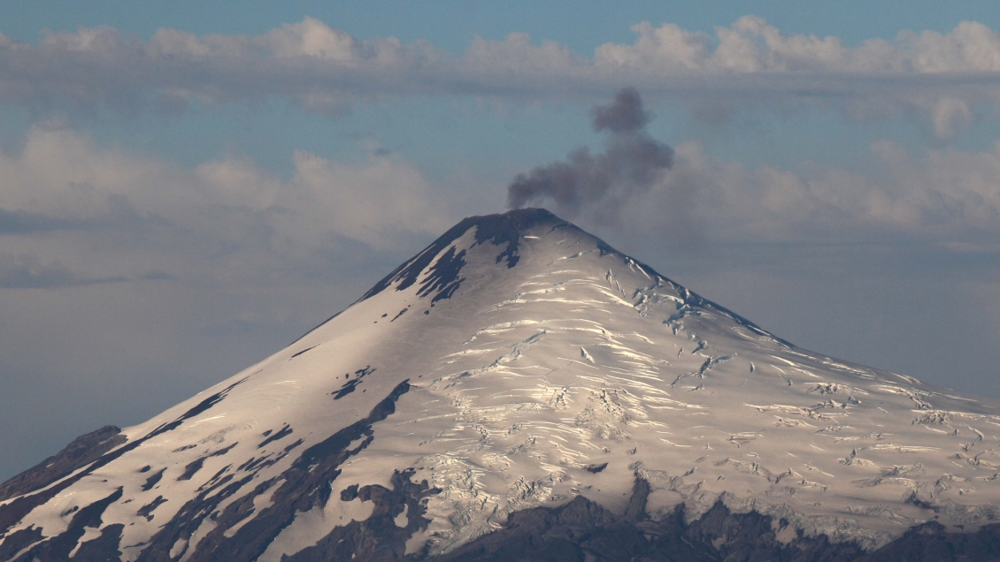

Parque Nacional Huerquehue
Sendero Los Lagos
Distancia: 12 km
Ver detalle de Sendero Los LagosRegión de La Araucanía
Fotografías ilustrativas de paisajes.

Parque Nacional Huerquehue
Distancia: 12 km
Ver detalle de Sendero Los Lagos
Parque Nacional Villarrica
Distancia: 12 km
Ver detalle de Sendero Volcán Villarrica
Reserva Nacional Malalcahuello
Distancia: 8 km
Ver detalle de Sendero Laguna BlancaParque Nacional Huerquehue
Recorrido de 12 km, de dificultad moderada.
Parque Nacional Villarrica
Recorrido de 12 km, de dificultad moderada.
Reserva Nacional Malalcahuello
Recorrido de 8 km, de dificultad moderada.
Equipo básico
Protección
Hidratación
Abrigo